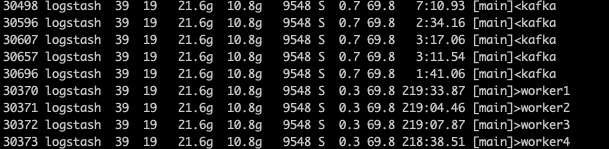

logstash消费kafka延迟
背景
logstash集群，每个节点服务器配置和任务配置相同，但是其中一个节点发生比较大的消费延迟
定位
观察发现出问题的节点负载比其他节点要低很多，进一步对比logstash进程内线程的情况，发现出问题的节点只有4个worker进程，而正常节点有16个worker进程

进一步排查发现问题节点的logstash配置与其他节点不同，
/etc/logstash/logstash.yml
pipeline.workers: 4
这个配置用来设置worker数量，默认使用cpu的核数，服务器配置为16核，实际只用到了4核，只用到了25%的CPU，所以出现消费延迟
总结
Logstash集群没有统一做集群配置管理，导致出现这种问题，除了这个参数之外，还有一些其他的参数也可能影响消费性能，比如pipeline.batch.size